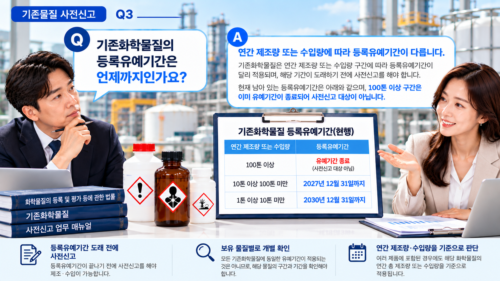

01. 기존물질 사전신고란?
등록유예기간 동안 기존화학물질을 등록하지 않고 제조하거나 수입하려는 경우에는 제조·수입 전에 사전신고가 필요한지 확인해야 합니다.
사전신고를 통해 등록유예기간을 적용받는 경우에는 해당 기간까지 등록을 유예받으면서 제조·수입할 수 있습니다.
먼저 확인할 사항
제품명만 확인하는 것이 아니라 실제 제조·수입하려는 화학물질을 특정하고, 해당 물질이 기존화학물질인지 확인하는 것이 출발점입니다.
02. 기존화학물질인지 먼저 확인합니다.
사전신고를 검토하려면 제조·수입하려는 물질을 정확하게 식별할 수 있어야 합니다.
- 화학물질명
- CAS No. 등 물질 식별정보
- 제품에 포함된 구성성분
- 기존화학물질 해당 여부
혼합제품을 수입하는 경우에도 제품명만으로 판단하기보다는 제품에 포함된 각각의 화학물질을 기준으로 관련 의무를 검토하는 것이 중요합니다.
03. 연간 제조·수입량이 중요합니다.
기존화학물질의 등록 및 등록유예기간은 연간 제조량 또는 수입량과 밀접하게 관련되어 있습니다.
따라서 사전신고를 준비할 때에는 해당 물질을 1년 동안 어느 정도 제조하거나 수입할 예정인지 확인해야 합니다.
여러 제품에 동일한 화학물질이 포함되어 있는 경우에는 제품별 물량만 보지 말고 해당 화학물질의 전체 제조·수입량을 기준으로 검토할 필요가 있습니다.
04. 등록유예기간도 함께 확인합니다.
기존화학물질은 연간 제조·수입량 등에 따라 적용되는 등록유예기간이 다를 수 있습니다.
| 연간 제조·수입량 | 등록유예기간 |
|---|---|
| 10톤 이상 100톤 미만 | 2027년 12월 31일까지 |
| 1톤 이상 10톤 미만 | 2030년 12월 31일까지 |
※ 위 표는 현재 남아 있는 일반적인 기존화학물질 등록유예 구간을 이해하기 위한 안내입니다. 개별 물질의 특성 및 적용 규정에 따라 별도 검토가 필요할 수 있습니다.
05. 사전신고 시 확인하는 주요 정보
기존화학물질 사전신고를 준비할 때에는 다음과 같은 정보를 확인하게 됩니다.
| 구분 | 주요 확인내용 |
|---|---|
| 물질정보 | 화학물질명·식별정보 등 |
| 수량정보 | 연간 제조량 또는 수입량 |
| 용도정보 | 해당 화학물질의 용도 |
| 유해성정보 | 분류·표시에 관한 정보 등 |
보유하고 있는 자료에서 물질정보를 확인하기 어렵다면 제조자·수출자 또는 공급자에게 필요한 정보를 추가로 요청해야 할 수 있습니다.
06. 사전신고는 언제 확인해야 하나요?
등록유예기간을 적용받으면서 기존화학물질을 제조·수입하려는 경우에는 실제 제조·수입 전에 사전신고 여부를 확인하는 것이 중요합니다.
특히 새롭게 화학물질을 제조하거나 수입하려는 사업자라면 기존 사업자가 과거에 신고했는지 여부만을 기준으로 판단하지 말고 자신의 제조·수입 계획을 기준으로 필요한 절차를 확인해야 합니다.

07. 사전신고 준비 흐름
처음부터 신고서 작성에 들어가기보다는 물질을 정확하게 특정하고 연간 제조·수입량을 확인한 뒤 적용되는 절차를 판단하는 순서가 좋습니다.
08. 사전신고 후에도 변경사항을 확인하세요.
사전신고를 완료한 이후 제조·수입량이나 화학물질의 용도 등 신고한 내용에 변경이 생기면 변경신고 대상인지 확인할 필요가 있습니다.
따라서 한 번 사전신고를 했다는 이유만으로 이후 절차가 모두 끝난 것으로 보기보다는 실제 제조·수입 현황과 신고내용이 일치하는지 지속적으로 확인하는 것이 중요합니다.
09. 실무에서 자주 놓치는 부분
- 제품명과 화학물질명을 동일하게 생각하지 않습니다.
- 물질명이나 CAS No. 등 정확한 식별정보를 확인합니다.
- 제품의 총 수입량이 아니라 해당 화학물질의 연간 제조·수입량을 기준으로 검토합니다.
- 기존화학물질이라는 사실만으로 사전신고 대상이라고 단정하지 않습니다.
- 연간 제조·수입량에 따른 등록유예기간을 확인합니다.
- 사전신고 후 제조·수입량이나 용도 등이 변경되었다면 변경신고 필요 여부를 다시 확인합니다.
기존물질 사전신고를 준비하고 계신가요?
제조·수입하려는 화학물질과 연간 취급량, 현재 가지고 있는 자료를 기준으로 추가 확인사항을 먼저 점검해 보세요.